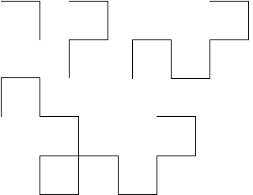

3. Here are the first four steps of the construction.
|  |
Each step consists of two copies of the previous step, rotated 90 degrees relative to one another. The next two pictures show the construction of the fourth step from two copies of the third.
FInally, here is a model of the fifth step, constructed from two copies of the fourth.
|
Return to Exercises